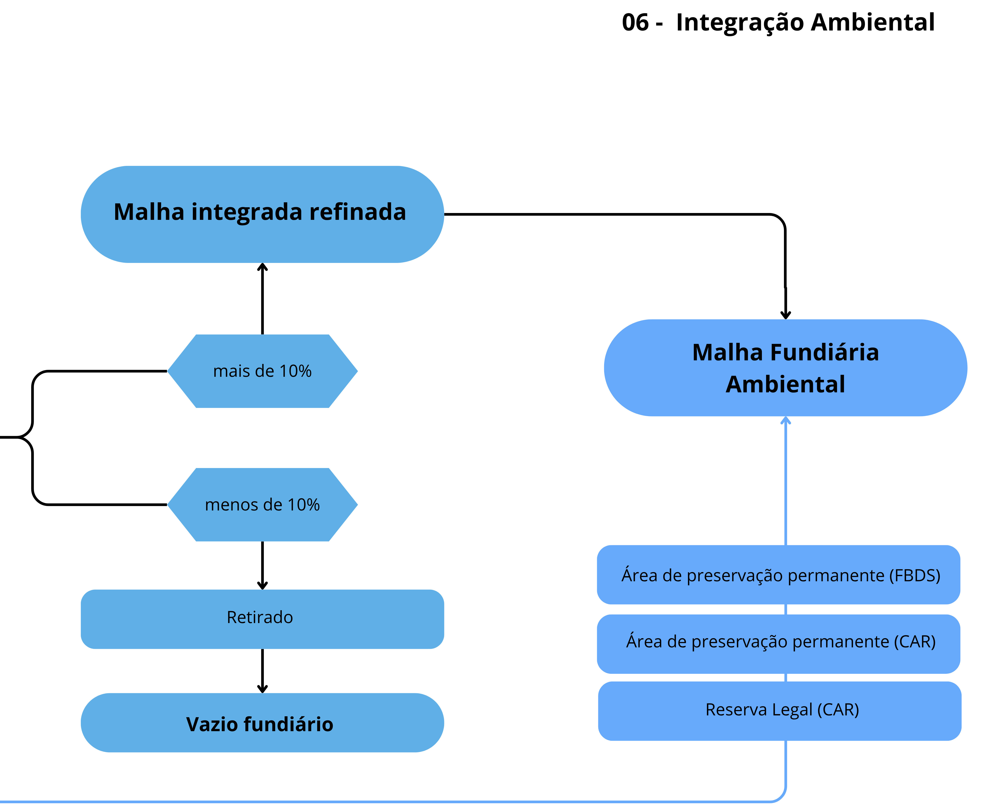

06. Integração Ambiental
Etapa final responsável por integrar os ativos ambientais à malha fundiária consolidada, resultando em uma base única que associa estrutura territorial, uso da terra e informações ambientais, permitindo análises em escala nacional.

Como Funciona
-
Incorporação de ativos ambientais: São integradas as Áreas de Preservação Permanente (APPs), o uso e cobertura da terra e as Reservas Legais (RL) à malha fundiária.
APPs:
- FBDS para todos os biomas, exceto Pampa e Pantanal
- CAR para Pampa e Pantanal (devido à ausência na FBDS)
Reserva Legal:
- Extraída exclusivamente do CAR (nível de imóvel)
-
Tratamento das APPs e RL: APPs são agrupadas por classe de uso do solo, com remoção de polígonos residuais (slivers) RL é agregada por código do imóvel (CAR)
-
Eliminação de sobreposição entre ativos: É realizada a sobreposição entre APP e RL. Em caso de interseção, a APP é mantida e o excedente da RL é removido. Isso evita dupla contagem no cálculo de ativos e passivos ambientais.
-
Associação com a malha fundiária: Os ativos ambientais são sobrepostos à malha fundiária. Cada ativo recebe o código da classe fundiária correspondente, permitindo identificar sua pertença territorial.
-
Geração da malha fundiária ambiental: Todas as camadas são integradas em uma base única, consolidando informações fundiárias e ambientais.
Produtos Gerados
O processo resulta em três subprodutos principais:
- Malha de Classe Fundiária Final (vetorial): Estrutura vetorial consolidada (hard class)
- Malha de Classe Fundiária Final (matricial): Representação raster da malha fundiária (hard class)
- Malha de Sobreposições (matricial): Raster com a quantidade de sobreposições por pixel